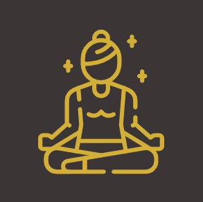
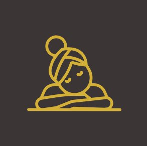
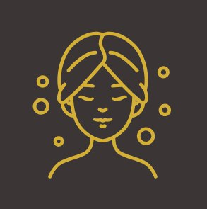

РОЗСЛАБЛЕННЯ ТА ЗНЯТТЯ СТРЕСУ

ПОКРАЩЕННЯ САМОПОЧУТТЯ
ЗНИЖЕННЯ ГОЛОВНОГО БОЛЮ

ПІДВИЩЕННЯ КРАСИ ТА ВПЕВНЕНОСТІ В СОБІ
Ми пропонуємо широкий спектр масажів: від класичного, оздоровчого та лімфодренажного до антицелюлітного та глибоких авторських релакс-технік.
Ми працюємо за попереднім записом, щоб гарантувати вам вільний час майстра та підготувати кабінет до вашого приходу.
Залежно від обраної процедури та ваших побажань, тривалість сеансу становить 30, 60 або 90 хвилин.
Ні. Майстер завжди орієнтується на ваш больовий поріг і регулює силу натиску. Масаж має приносити полегшення та комфорт, а не терпіння болю.
Не хвилюйтеся. Перед сеансом майстер поспілкується з вами, запитає про самопочуття, рівень навантаження та бажаний результат, після чого допоможе підібрати ідеальну техніка саме під ваші потреби.
Життя буває непередбачуваним. Просто попередьте нас у месенджері або за телефоном щонайменше за 2-3 години до сеансу, і ми без проблем перенесемо його на інший зручний час.
Затишний простір для вашого відпочинку знаходиться у самому серці Моршина.
Україна, м. Моршин
вул. Джерельна, 1
Зручно добиратися як громадським транспортом, так і власним авто. Поруч є парковка.